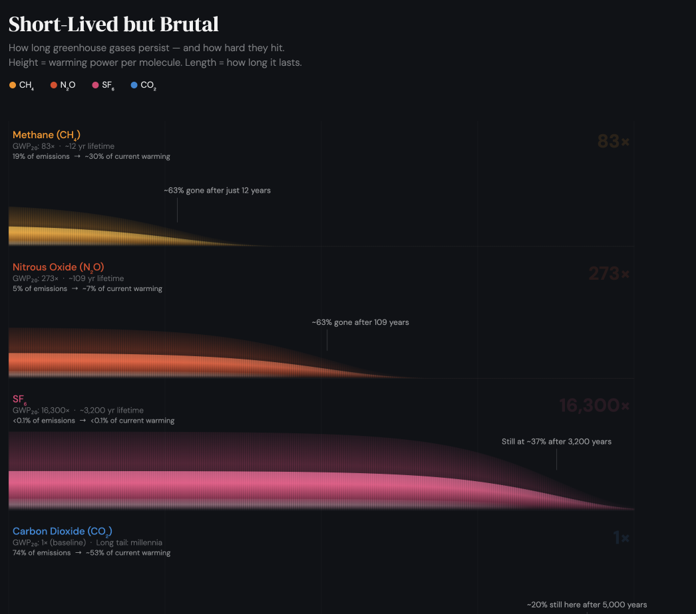

Short-Lived but Brutal
A flame chart revealing how long greenhouse gases persist in the atmosphere — and how hard each one hits

The Design Intent
Most greenhouse gas comparisons are tables — rows of numbers that flatten the story into a list. This visualization takes a different approach: it renders each gas as a flame whose height represents warming power and whose length represents atmospheric lifetime. The result is something visceral. You don't read the chart so much as feel it.
The dark background was intentional — it makes the glowing flames pop with a heat-map intensity that tables simply can't convey. Each gas gets its own row, its own color, and its own shape of decay. The visual language is immediately legible: taller means more dangerous per molecule, longer means more persistent.
The Four Gases
The most urgent near-term target. Methane hits 83 times harder than CO₂ over a 20-year window but has only a ~12-year atmospheric lifetime — meaning cuts made today show up fast. The annotation marks the 63% decay point at the 12-year mark: dramatic decline, but still punishing while it lasts. Responsible for ~30% of current warming despite representing just 19% of emissions.
More than three times more powerful than methane over 20 years, with a much slower exit: ~109 years in the atmosphere. The flame is taller and stretches far longer, visualizing a gas that stays committed to its warming work for over a century. Primarily driven by agriculture and fertilizer use, it represents ~7% of current warming.
The most alarming number in the chart. Sulfur hexafluoride — used in electrical equipment — is 16,300 times more potent than CO₂ over 20 years, and has a lifetime of roughly 3,200 years. The flame stretches nearly the full width of the chart, nearly maintaining its full height at the 3,200-year annotation. A tiny emission makes a very long commitment.
The weakest per molecule, but the most structurally intractable. CO₂ doesn't follow a simple exponential decay — it removes quickly at first (ocean and biosphere absorption), then much more slowly, with ~20% remaining in the atmosphere effectively permanently. The annotation at 5,000 years confirms it: ~20% of every tonne we emit is with us for millennia. The low flame height belies the real danger.
Height is warming power. Length is persistence. SF₆ is terrifyingly tall and nearly never-ending. CO₂ stays low but never fully dies. Methane is the one we can actually do something about — quickly.
Design & Visual System
Deep dark (#0e1117) to maximize contrast with the glowing flame gradients. The darkness also reinforces the tone — these aren't friendly bar charts, they're emissions with consequences.
Each gas has a distinct color: amber for CH₄, brick-red for N₂O, rose-pink for SF₆, and steel blue for CO₂. Colors were chosen to feel heat-coded while remaining distinct at a glance.
Each flame is built from 300 segments using canvas gradient fills — a core glow, an outer halo, and a hot white highlight at high-intensity areas. The result is a luminous, layered effect that looks rendered rather than drawn.
A linear x-axis would bury methane on the left and leave most of the chart empty. Logarithmic scaling from 1 to 10,000 years lets all four gases breathe while keeping their relative timescales honest.
Technical Approach
The entire chart is rendered to a 1080×1080 HTML5 canvas at 2× DPR for crisp output at any display density. All drawing is done in vanilla JavaScript — no charting library, no SVG. The flame gradients are built segment-by-segment using createLinearGradient, with separate passes for the outer glow, core, and white-hot center.
CH₄, N₂O, and SF₆ follow simple exponential decay: e^(−t / lifetime). CO₂ uses the IPCC multi-phase model — a fast fraction absorbed by oceans and biosphere (45% over ~25 years), a medium fraction (30% over ~200 years), a slow geological fraction (5% over ~3,000 years), and a permanent 20% that never removes. This four-component model is what gives CO₂'s flame its distinctive flat tail.
Data Sources
IPCC Sixth Assessment Report (AR6), Working Group I (2021)
Table: 7.15 — Global Warming Potentials and lifetimes of greenhouse gases
GWP₂₀ values used: CH₄ = 83×, N₂O = 273×, SF₆ = 16,300×, CO₂ = 1× (baseline)
Lifetimes: CH₄ ~12 yr, N₂O ~109 yr, SF₆ ~3,200 yr, CO₂ multi-phase (see above)
Warming attribution: IPCC AR6 synthesis estimates for current warming contribution by gas